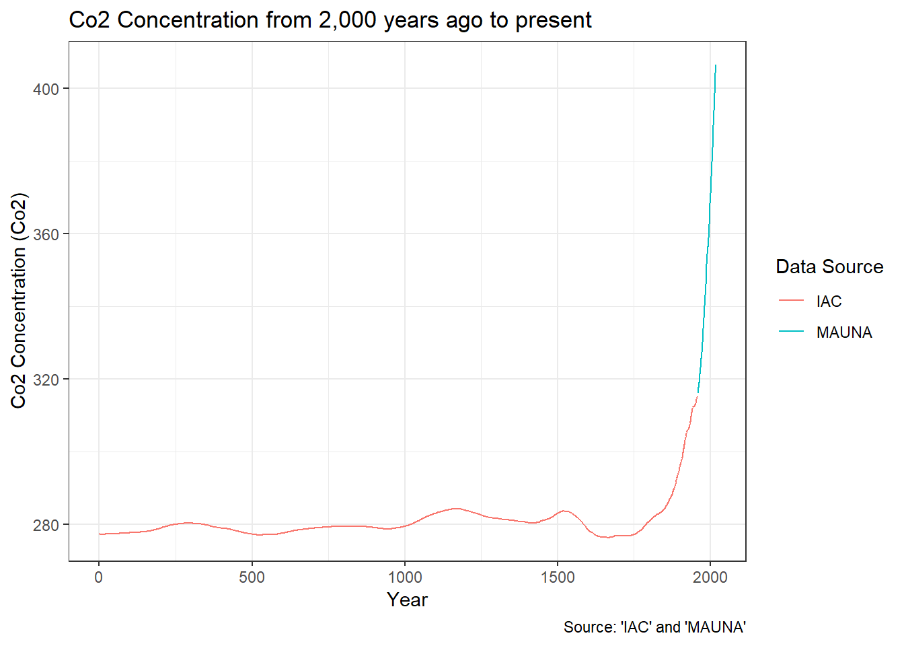
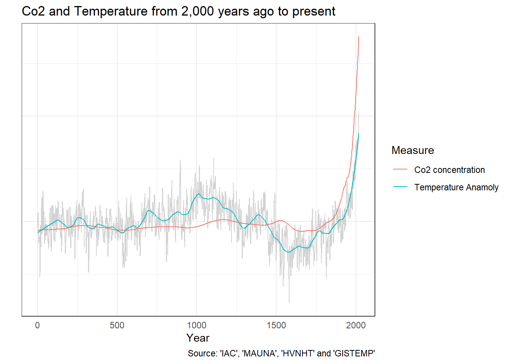
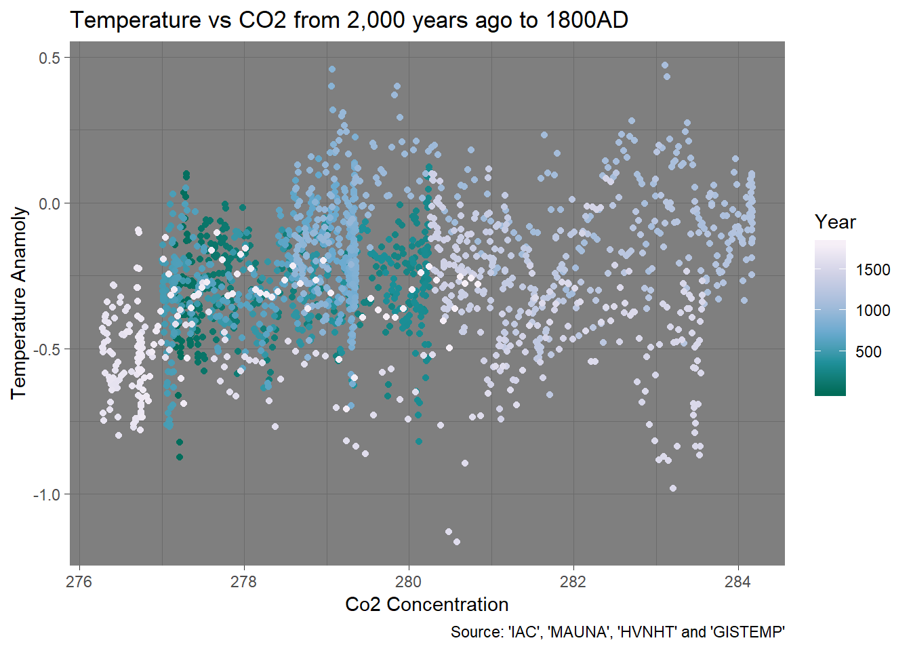
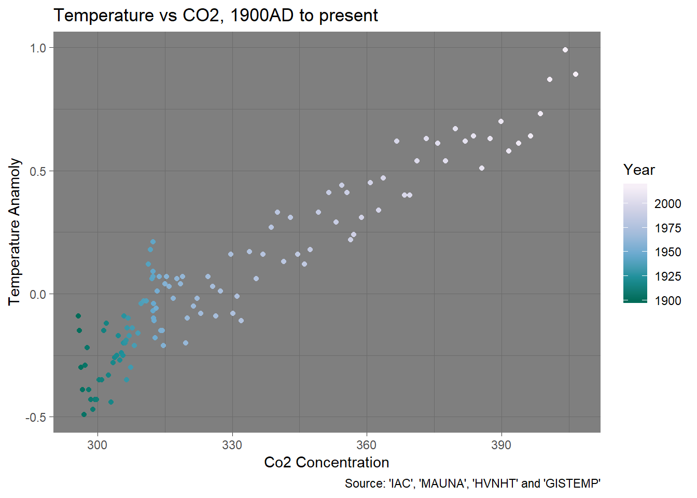
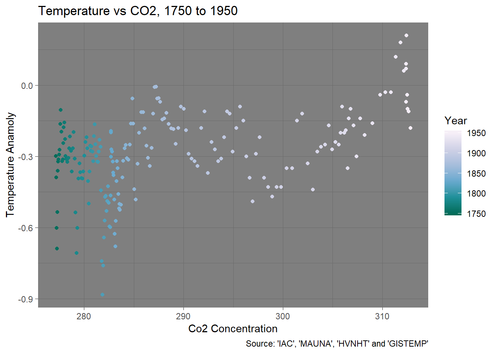

In Part 1 of this series I took a brief look at how global temperature has been changing over the last two millennia.
In this post I’ll take an introductory look at whats generally regarded as the big baddy, your friend and mine, carbon dioxide.
On the surface carbon dioxide doesn’t seem like a big deal. Colorless and odorless. These days its composes 0.04% of the atmosphere. Its emitted by volcanoes, hot springs and geysers. Its presence is fundamental for life on Earth. Plants gobble it up in photosynthesis, which creates the fuel they need to live, and we breathe it out as we go about our daily lives, fueled by those plants we gobbled up.
However its that role that Co2 plays in our fuel sources that is supposedly at the root of our problem. Its not just living things that use the fuel created by plants. Its also our cars, planes, power plants and the machinery of industry. The original source of the oil, coal and gas we use to fuel our modern lives are plants that got buried over vast periods of time. And we are digging all that fuel that got buried over incredibly long periods of time and burning it in our cars, planes and power plants at unprecedented rates.
All this burning of previously buried plants is increasing the amount of carbon dioxide in the atmosphere, which increases the global temperature due to something called “The greenhouse effect”.
Okay. We grab google. Enter ‘Historical Co2 Datasets’ and see what we get.
Top match is Historical CO2 Datasets. Like the temperature data its divided into historical reconstructions and more recent datasets based on direct instrument readings.
Ill use the data from the “Institute for Atmospheric and Climate Science (IAC) at Eidgenössische Technische Hochschule in Zürich, Switzerland.” for the historical data. I’ll call this data set IAC.
And I’ll use the observations from the Mauna Loa Observatory in Hawaii for the up to date data. I’ll call this the MAUNA data set.
Lets combine these datasets together and use it to plot Co2 concentrations from 0AD to present.

On this graph we can see that the Co2 concentration bubbling around at 280 ppm for ages. And then around the 1800’s or so it starts to shoot up, which is pretty similar to the temperature anamoly record.
And while there is that same shooting up I get the feeling that there are some differences between the two records. So we can better compare the carbon dioxide concentration to the temperature record I’m going to put them on the same scale so they can both appear on the same graph. This lets us focus on the relationship between the two records rather than the absolute values.

The temperature record is a crazy mess so I’ve added a smoothed line to help visualize the long term trends. You can see that compared to temperature the carbon dioxide concentration has been pretty constant prior to 1800 or so while the temperature tends to bubble around a bit. And while they both start shooting up in the last few hundred years it looks like the carbon dioxide concentration might have started shooting up before the temperature did.
Okay. The essential idea behind all this data downloading, machine learning and plotting is that their is some sort of relationship between global temperatures and carbon dioxide concentrations that we are trying to uncover for ourselves. I’ve done a bit of poking around in the data and I’ve think I’ve got a handle on it. But its a bit of a dance and showing it is going to be a bit tricky, so bear with me for a bit.
Another way to see the relationship between the two different records is to create a graph where the temperature is on one axis and the Co2 concentration is on the other. However this hides how the records are varying over time so on the followings graph I’ve indicated the year using the color.
On the first graph I’m showing temperature anamoly versus carbon dioxide concentration from 2,000 years to 1800. 1800 is just before the carbon dioxide concentrations started to shoot up.

If your thinking man thats a bit of a mess your right. Over 1800 years carbon dioxide concentrations bumbled between 276 ppm and 284 ppm, the temperatures roamed up and down a degree and a half. But there is no outstanding discernible pattern in the relationship betwen time, carbon dioxide and temperature.
Another way to put it is that temperature and carbon dioxide are in equilibrium. Its a dynamic ever changing system but it tends to shuffle around the same values.
I’m going to call this period of time the classic period.
Now I’m going to plot the same graph but for 1900 onward. By now both carbon dioxide concentrations and temperatures are well on their upward climbs.

Now its a very different story. while there is still a bit of that “dynamic system bumbling around”, their is now a distinct relationship carbon dioxide concentration and temperature. As time advances so does both records. And whats more that relationship looks pretty damn close to linear.
So by 1900 things look like they have changed quite dramatically. The system is no longer in equilibrium and is changing. In the terminology of climate change its now being “forced” to change from its long term equilibirum state.
I’m going to call this period of time the modern period.
So what happened between 1800 AD and 1900 AD. On this graph I’ve widened the date range a bit so it covers 1750 to 1950. This lets us see the transition from the classic equilibrium state to the modern forced state.

On the left side of this graph you can see the end of the equilibirum state. Then sometime around 1800 A.D. the carbon dioxide concentrations start to rise, however the temperature continues to bumble along for the next 100 years or so. Then around 1900 A.D. on the right side of the graph, the temperature transistions into its forced state and starts the rise which is continuing to this day.
I’m going to call this period of time the transitional period.
Historical CO2 Datasets. Like the temperature data its divided into historical reconstructions and more recent datasets based on direct instrument readings.
Institute for Atmospheric and Climate Science (IAC) at Eidgenössische Technische Hochschule in Zürich, Switzerland.
Accessed from Historical CO2 Datasets. ." for the historical data. I’ll call this data set IAC.
C. D. Keeling, S. C. Piper, R. B. Bacastow, M. Wahlen, T. P. Whorf, M. Heimann, and H. A. Meijer, Exchanges of atmospheric CO2 and 13CO2 with the terrestrial biosphere and oceans from 1978 to 2000. I. Global aspects, SIO Reference Series, No. 01-06, Scripps Institution of Oceanography, San Diego, 88 pages, 2001.
Dataset accessed 2018-09-03 at https://data.giss.nasa.gov/gistemp/.